Unpublished draft. Proposed periods need approval. SPEC-SEI-003 is retained in the archive and remains the selected Confluence source.
Customer Offboarding Solution Summary
Logical Feature Specification · Sequence and Reuse Assessment · Feature folder
Revision overview
This separate draft develops SPEC-SEI-003 into three review views. It adds platform responsibility scenarios, separate support and access periods, explicit cutoff handling and a fuller export assessment. The predecessor remains unchanged and selected for stable Confluence page 923861391.
OFF-01–08, OFF-I01–08, OFF-R01–10 and OFF-A01–11 retain their meanings. Existing detailed interaction and data inventories remain in SPEC-SEI-003. No provider contract, retention schedule, lifecycle status or publication approval changes. Support durations, commercial terms and the practical delivery of invoice-copy rights remain open product and legal decisions.
1 Problem and intended outcomes
A business can leave Sage while invoices still need delivery confirmation, payment reporting, corrections or evidence. Ending every capability at subscription expiry can strand this work. Keeping every capability active indefinitely leaves unclear authority, cost and security exposure. The business needs a dated statement of what stops, what continues, who owns it and how records remain available. REF-PRODUCT.
The intended outcomes are an observed switch for new traffic, an accountable path for earlier obligations, a usable evidence handover, and controlled access removal. The logical specification defines the behaviour. This summary presents the decisions needed to offer it.
The business administrator or authorised accountant approves scope. Product and Operations own the customer exit statement. Each platform operator owns its external actions under its agreement. Legal/Tax determines continuing obligations; Privacy/Records determines data disposition; Security controls credential release. These are responsibilities, not proposed service boundaries.
3 End-to-end flow

Editable Draw.io · PNG.
The existing diagram shows the planned OFF-01–07 journey. G4 changes new traffic. G5 keeps earlier work accountable. G6 and G7 separately release dependencies and assign data disposition. Export preparation can start before cutover; OFF-07 is its completion and disposition gate. The diagram's order does not require all export generation to wait until release. A partial or uncertain result follows OFF-08 in the logical view.
4 How long should support continue?
Recommendation for product review: use separate periods with explicit start events. Avoid one account-wide expiry. The following numbers are planning proposals for OFF-Q01; they are neither statutory periods nor existing Sage commitments. Detailed rules and failure handling are authoritative in SPEC-SEI-032, section 4.
Spain's Law 56/2007 Article 2 bis.3 gives recipients four years from invoice issue to request copies without additional cost. This is not four years of full Sage service. The accountable copy provider, applicable commencement rules and post-exit channel need Legal confirmation. REF-COPY; OFF-Q03.
5 Do we need export?
Yes: provide an authorised export and evidence-handover capability. This is already in the draft product baseline, OFR12–13. For each exit, agree whether the customer receives files, an authorised destination receives them, or a verified continuing archive supplies access. Record the result and limitations. A change of provider does not automatically transfer records or transfer responsibility for unfinished actions. REF-PRODUCT.
The package must distinguish source invoice files, public copies, readable renditions and event/report evidence. A PDF-only package cannot establish the complete structured evidence handover. SPEC-SEI-032, section 5 defines scope, manifest, receipts, late additions and recovery. Public download capabilities are inputs to this assessment; they do not prove that every source original, private acknowledgement or history item is available. REF-SPFE.
6 Reuse and Spain boundaries
The reuse assessment records source capability, local changes, owner and evidence gaps. No production exit implementation is established by this review.
7 Decisions needed before a customer commitment
These decisions block the dependent commitment or automation. They do not require unrelated product shutdown or publication. An owned manual gate is possible only with authority and evidence; it cannot waive an applicable obligation.
REF Source references